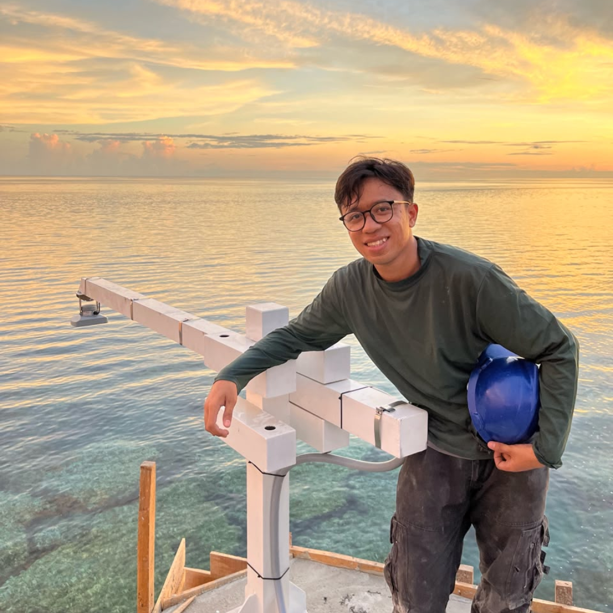

Ahmad Dhuha Habibullah
Physical oceanographer. I study marine heatwaves in Indonesian waters and build the systems that observe and forecast them.

Between the ocean and the instruments
I hold a Master's degree in Earth Science (Oceanography) and have spent four years as a system integration specialist for marine-meteorological infrastructure in Indonesia.
My research uses satellite and ocean datasets to understand heatwaves and climate modes. My field work puts the sensors, radars and platforms in the water and on the coast.
Selected work
Coastal weather stations40 automated stations across Indonesia, from Aceh to Papua2022–2023
- Field technician and deployment coordinator: site surveys, civil assessments, hardware assembly, sensor calibration and handover, including remote islands.
- Designed custom brackets for sensor placement in harsh marine conditions.
- Led installation teams and coordinated suppliers and clients.
- Installed automated weather stations on commercial passenger and cargo vessels.
Ocean drifters and profiling floatsDeployment and data analysis in Indonesian seas2023
Deployed surface drifters and subsurface floats, and analysed temperature, salinity, currents and trajectories to evaluate platform lifespan and observe regional phenomena.
Weather radarC-band dual-polarization Doppler, Sidoarjo/Surabaya2024
- Site preparation and civil works, including removal of the legacy radar and radome.
- Power, generator, UPS, surge protection and grounding installation.
- Software configuration, signal calibration and acceptance testing.
Tropical cyclone forecasting toolWith CLS France, forecasters refine tracks and publish advisories2025–2026
- Helped define the vortex-tracking and real-time data pipeline solution for operational forecasting workflows.
- Supported a web-based forecasting and warning tool, in close collaboration with CLS (Collecte Localisation Satellites) France.
- Contributed to a maritime web dashboard combining coastal and ship observations, model output and satellite imagery.
- Managed hardware deployment, acceptance testing and user training across regional offices.
Impact-based forecasting and precision agricultureTurning forecasts into risk warnings, with CLS France2026
- Developed protocols that translate forecasts into warnings for agriculture, water resources and disaster mitigation.
- Led field operations with research partners: soil-moisture sensors, drone spectral monitoring and crop digital twins.
Daily forecasts and business developmentMarine weather services for commercial clients2022–2026
Produce daily marine weather forecasts from radar data, maintain the meteorological systems behind them, and support business development with CLS France by identifying infrastructure opportunities.
Solar Tracker and Energy SimulatorAn interactive tool you can try in the browserOpen
A standalone simulator exploring solar tracking and energy yield. Launch the simulator.
Research
Marine heatwaves and tropical cyclone intensificationMarine Systems & Ocean Technology2026
Only 8 of 231 cyclones in the southeastern Indian Ocean (1982 to 2024) met an active marine heatwave, yet these intensified markedly more, linked to higher ocean heat content and stronger air–sea energy transfer.
Heatwaves, cold spells and coral reefs in LombokMarine Systems & Ocean Technology2025
Daily sea surface temperature (1998 to 2022), satellite imagery and field surveys show how temperature extremes triggered severe coral bleaching, cutting coral cover by roughly 30%.
Sea level off western Sumatra, ENSO and the IODAsian Journal of Aquatic Sciences2024
Thirty-one years of data show sea level falling during El Niño and positive IOD phases and rising during La Niña and negative IOD phases, lagging ENSO by one month and responding to the IOD immediately.
Marine heatwaves and coral bleaching in Lombok watersCoral bleaching intensity from satellite data2024
Quantifies bleaching intensity from satellite-derived temperature and heatwaves, and highlights sharp swings in reef coverage driven by thermal stress, human activity and climate change.
Marine heatwaves in Indonesian fisheries areasJournal of Marine Science and Engineering2023
Analysis of daily NOAA OISST data (1982 to 2020) across 11 fisheries management areas shows rising heatwave frequency, duration and intensity, most clearly in FMA 573, 716 and 711.
Sea surface temperature variability in IndonesiaIOP Conference Series: Earth and Environmental Science2021
Monthly data from 1979 to 2021 show annual and semi-annual cycles driven by the Asia–Australia monsoon, with local variability off western Sumatra tied to the Dipole Mode Index.
Background
- Python
- MATLAB
- Metocean data analysis
- Sensor calibration
- System integration
- Project coordination
- English C1
- Indonesian (native)